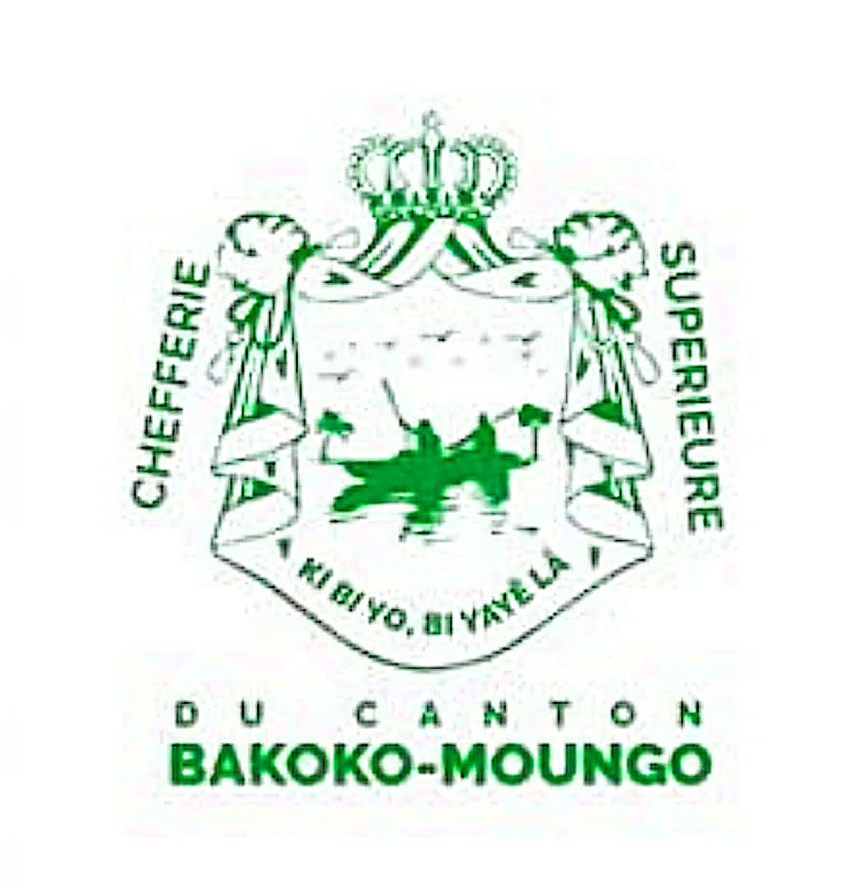

Origins of the Canton
Well before its first contact with the Germans in 1885, the Bakoko-Moungo community already had a structured social organisation, with a figure recognised as canton Chief — a status born of the need for a Bakoko-Moungo representative at meetings of Sawa leaders in Douala, in the time of Bèlè ba Doo and Ngando Akwa. To protect their eldest son Mijang from the risk of being handed over to slave traders by the Douala chiefs, the Bakoko instead sent Bea Mbon, who thus became their first Superior Chief.
His son and successor, Nkombe Bea, proved despotic — going so far as to confiscate the funerary belongings of the deceased before their burials. It was the fearless Mpah Sem, coming to defend his wronged sister Ngo Time, who led the revolt: he captured Chief Nkombe Bea and, before the assembled people gathered to the sound of the tam-tam, secured his symbolic removal through the handover of the chieftaincy's fly-whisk, uttering the words "take the chieftaincy, I am chief no more". Mpah Sem thus became Superior Chief of the Bakoko-Moungo. The chieftaincy has since passed through several generations — Moukoko, Diboume di Toto, Toto Essane Conrad, Essawe Moukoke, Benga Diboume — down to the current Superior Chief, His Majesty Essawe Njocke Maurice, also appointed 2nd Vice-President of the NGONDO at the General Assembly of 7 March 2026.
⚖️ Ancestral Justice
The Superior Chief
The Ngondo in Pictures
